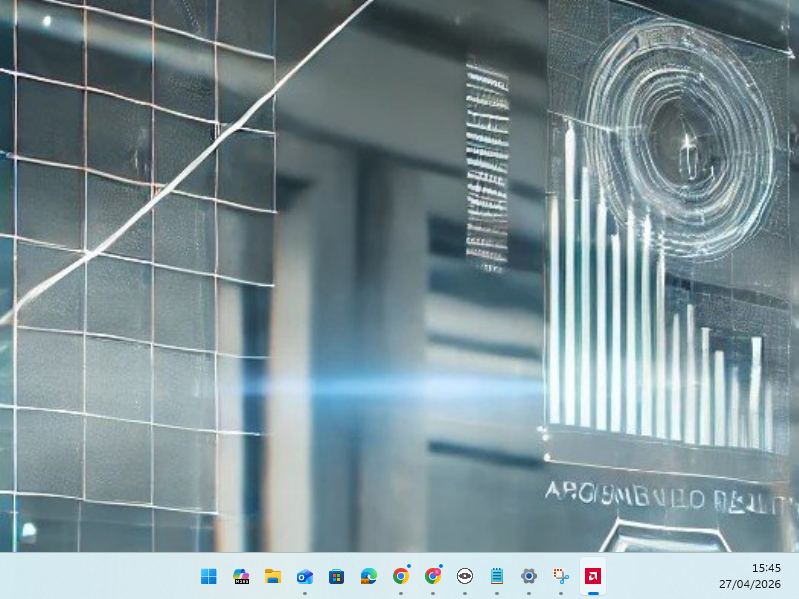
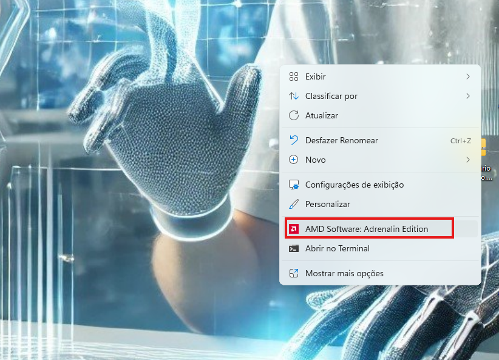
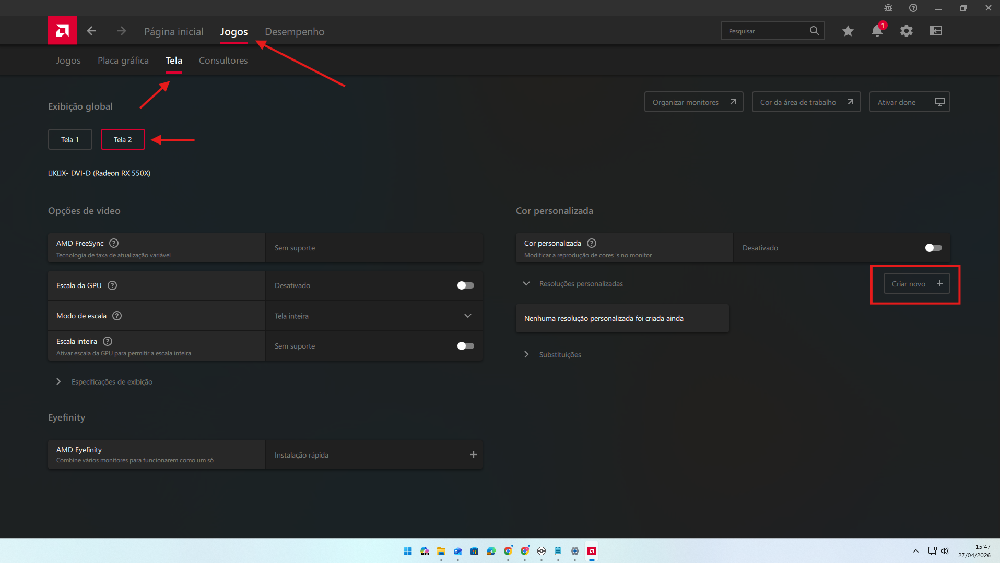
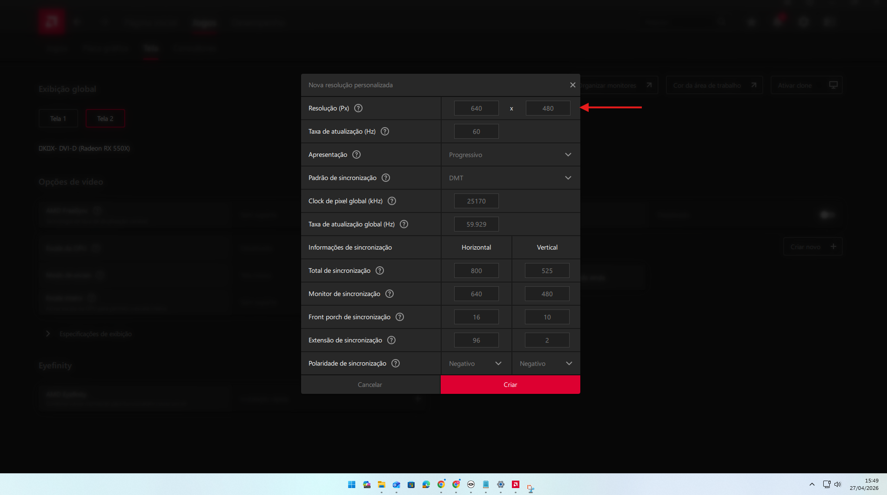
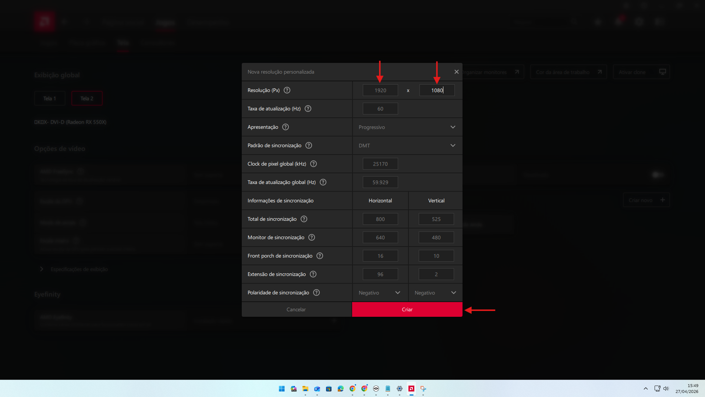
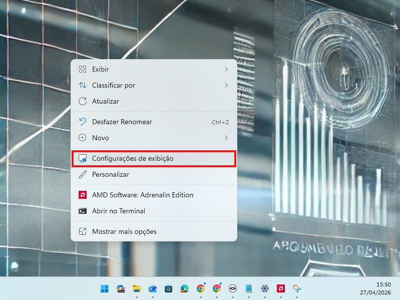
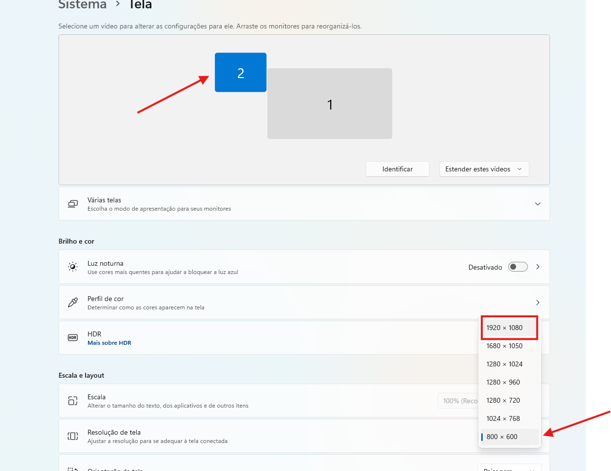
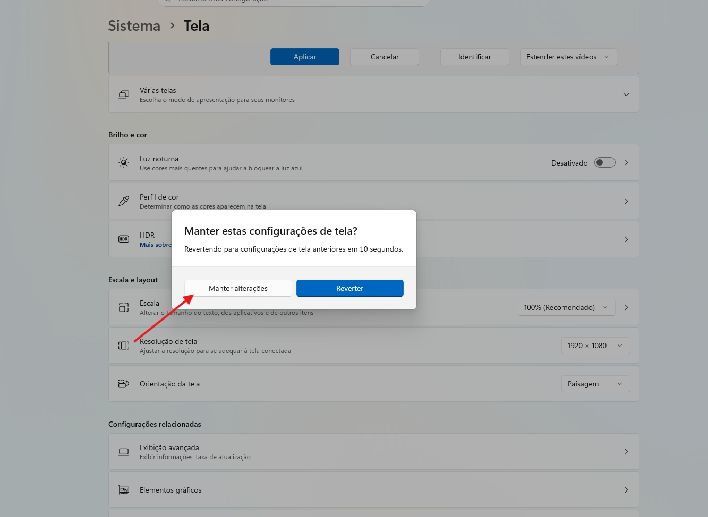

O segundo monitor está com a imagem muito ruim
Página de solução — Monitores e imagem
Como resolver
- Identificar se a imagem do segundo monitor ficou borrada, esticada ou com baixa qualidade depois que a TV foi ligada.
- Verificar nas configurações de exibição do Windows se a resolução 1920x1080 não aparece como opção disponível para o segundo monitor.
- Na área de trabalho, clicar com o botão direito e abrir AMD Software: Adrenalin Edition.
- No AMD Software, acessar Jogos > Tela, selecionar a Tela 2 e clicar em Criar novo.
- Na janela de nova resolução personalizada, preencher a resolução 1920 x 1080.
- Clicar em Criar para cadastrar a resolução.
- Depois de criar a resolução, abrir as Configurações de exibição do Windows, se a imagem ainda não tiver sido corrigida automaticamente.
- Selecionar o monitor 2 e alterar a resolução para 1920 x 1080.
- Quando o Windows perguntar se deseja manter a configuração, clicar em Manter alterações.
Observações
- Esse problema costuma acontecer quando a TV é ligada e o sistema reduz automaticamente a resolução do segundo monitor.
- O sinal mais comum é a imagem ficar borrada ou esticada e a resolução 1920x1080 não aparecer como opção no Windows.
- Na maioria dos casos, criar a resolução personalizada no driver da AMD faz a opção correta voltar a aparecer.
- Mesmo depois de cadastrar a resolução no AMD Software, pode ser necessário selecionar manualmente 1920x1080 nas configurações de tela do Windows.
- São 9 imagens do processo. Os passos 3 e 4 usam a mesma tela de referência.
Ilustração do processo
Use as imagens abaixo como referência visual. Passe o mouse sobre uma imagem para ampliá-la.

Exemplo de tela com imagem ruim no segundo monitor.

Clique com o botão direito na área de trabalho e abra AMD Software: Adrenalin Edition.

No AMD Software, acesse Jogos > Tela, selecione a Tela 2 e clique em Criar novo. Os passos 3 e 4 do procedimento se referem a esta mesma tela.

A janela de nova resolução personalizada será exibida.

Digite 1920 x 1080 no campo de resolução e clique em Criar.

Se necessário, clique com o botão direito na área de trabalho e abra Configurações de exibição.

Nas configurações de exibição, selecione o monitor 2 antes de alterar a resolução.

Altere a resolução para 1920 x 1080.

Quando aparecer a confirmação do Windows, clique em Manter alterações.
Quando chamar suporte
Acionar suporte se a resolução continuar incorreta mesmo após criar a resolução personalizada e tentar aplicar 1920x1080 nas configurações de exibição do Windows.